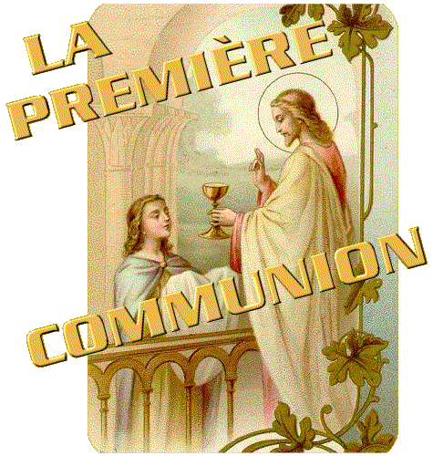

Seen by the Catholic Church as the essential passage from childhood into social life, First Communion was a true rite of initiation, weighty in consequences because of the commitments made that day before, and toward, God and men.
First Communion crowned a year of catechism in which the children were taught the Ten Commandments, Heaven and Hell, the sacraments, the deadly sins… The ceremony usually took place on a spring Sunday, around Easter. At high mass, when it came time for communion, the young communicants, boys on one side and girls on the other, came forward solemnly in line to receive the consecrated host. Only then did the rest of the congregation come up to receive communion. There was beautiful singing, and white lilies and other spring flowers decorated the church.
As soon as the parish priest had announced the date of the ceremony, the mothers hurried to the shops to buy fabric and sew (or have the dressmaker sew) the outfits for the ceremony. The little girls wore lovely white dresses and a veil of tulle or lace. The little boys wore a handsome brand-new suit, usually with short trousers. They wore a white armband on the left arm. For the occasion the children wore a new pair of shoes for the first time.

First communicants on the steps of Ste-Élisabeth church in 1920
(Source of this photo: website of the Société historique de St-Henri)
A few days before the ceremony, the children went to confession and, for the first time, received forgiveness for all the sins they had committed. With their souls purified they returned home to families who watched over them with great care: that state of purity had to be preserved until the sacred moment when they would receive the Body of Christ.
There was no rest at home, because after mass the family would be coming over. Out came the good dishes kept for special occasions, and the embroidered tablecloths. Preparations went full speed ahead for the festive meal, and a cake was ordered from the pastry shop, sometimes a tiered one, topped with a little figurine of a boy or girl communicant. People ate well and laughed, but there was no dancing, out of respect for the religious nature of the sacrament.
Here you will find photos of the reception after Gilles Daoust's First Communion in the spring of 1962.

(source of this photo: website of the Société historique de St-Henri)
The young communicants received gifts of a religious nature to mark this important day. Most often these were a missal, little holy statuettes, beautiful rosaries and, above all, very elaborate holy pictures (lush gardens, arches of light… depicting the earthly paradise). The children slipped these pictures into their missals, as bookmarks to remind them of the solemn day of their First Communion.
On the following Sundays it was not unusual to visit relatives, dressing the child up again as a communicant. That way, those who had not been able to attend the ceremony could see the child in all their finery and offer congratulations.
Younger daughters of Alphonse CHARETTE Sr.: LUMINA and IRÈNE
Sons of Alphonse CHARETTE Jr.: ROSARIO and ALEXANDRE
Daughter of Oscar CHARETTE: LAURENTIA
Daughters of Rose-Anne CHARETTE: ARGENTINE and LUCIA
CARON children: MARIE-ANNA AND ANTONIO
Children of Rosario CHARETTE: THÉRÈSE, BENOÎT, GÉRARD, ROSAIRE, JEAN-NOËL and GHISLAINE
Child of Joseph Rosario Benoît CHARETTE: DIANE
JACQUELINE CONSIGNY
Children of Gérard CHARETTE: NICOLE, ANDRÉ, CHRISTIANE, FRANCINE and LUCIE
GILLES DAOUST
ST-ANTOINE family: MARIE, FERNAND and SUZANNE
Children of Roger GRISÉ: ROBERT and GILLES
The NO-PHOTOS (remember that by the late 1960s this ceremony was done in everyday clothes, which gave parents less reason to have official photos taken of the event): CÉLINE, MARTIN, DENIS, FRANÇOIS and CLAUDE.
CHANTAL RONDEAU
DENIS'S
CONFIRMATION. Confirmation is another religious ceremony, held
a few weeks after First Communion. It
took place under the auspices of the bishop of the diocese and was also meant
to strengthen the young person's faith and commitment to Catholicism. 
 site created for
800 x 600, last updated on April 15, 2002.
site created for
800 x 600, last updated on April 15, 2002.
Send us your photos to enrich this site.
©2000-2002Nicole Charette